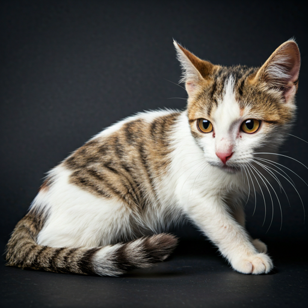
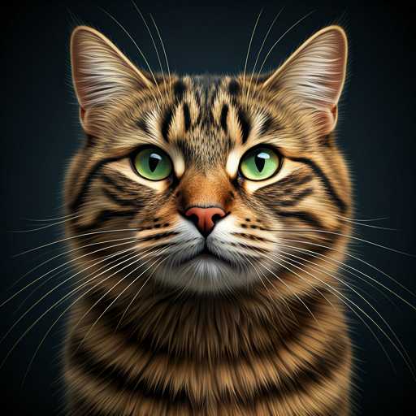
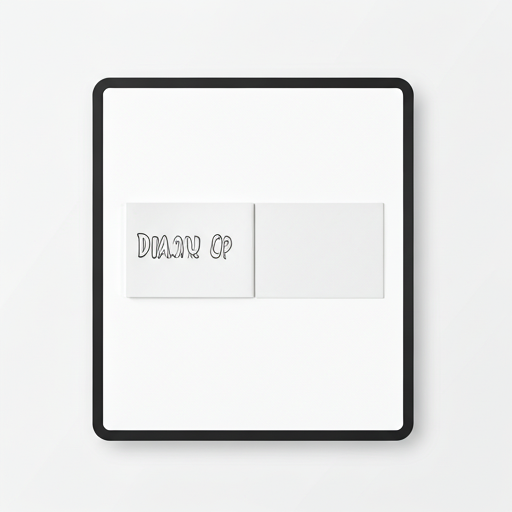

紧急 · 医疗求助
教三教学楼后的“大橘”腿部受伤，急需送医
schedule 15分钟前发布

location_on
第三教学楼 · 停车场草坪
pets
关联：大橘 (Orange)
高优先级
待响应
+12 人正在关注
pets
目击：奶牛在操场出没
刚刚 · 综合体育场南侧

sell
奶牛 (Tuxedo)
奶牛今天看起来心情不错，在南侧看台晒太阳，有人刚投喂了冻干。

猫咪日记 · 2023.10.24
图书馆的“三花”进入冬眠模式
今天去借书发现她在三楼社科区睡得很死，大家轻声点哦...
#宁静校园 #三花
person
学号末位07
map
地图动态
更新了 4 处投喂点位置
根据近期猫咪活动路径，志愿者更新了位于西区礼堂背后的隐蔽投喂点，请知悉。